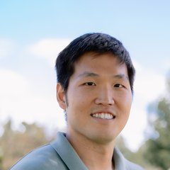
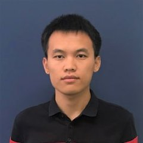
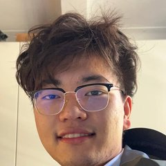

Seongjin Choi
Co-director · Assistant Professor
Transportation AI, generative models, spatiotemporal learning
PEOPLE
Researchers in Civil, Environmental, and Geo-Engineering working together at the Minnesota Traffic Observatory.

Co-director · Assistant Professor
Transportation AI, generative models, spatiotemporal learning
Co-director · Associate Professor
Traffic flow modeling and control, vehicle automation, safety

Postdoctoral Researcher · 2026–
AI in traffic operations, agentic traffic simulation, synthetic populations

PhD student · 2024–
Traffic state estimation, learning from sparse data, inverse problems
PhD student · 2025–
Traffic forecasting with neural networks for large-scale spatiotemporal data
MS student (MnRI) · 2024–
Cooperative vision-language-action models for autonomous driving
Undergraduate researcher · 2026–